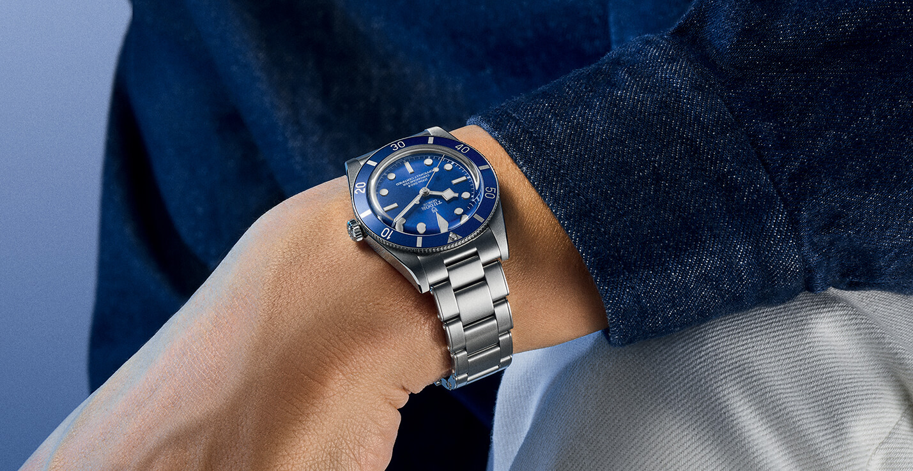
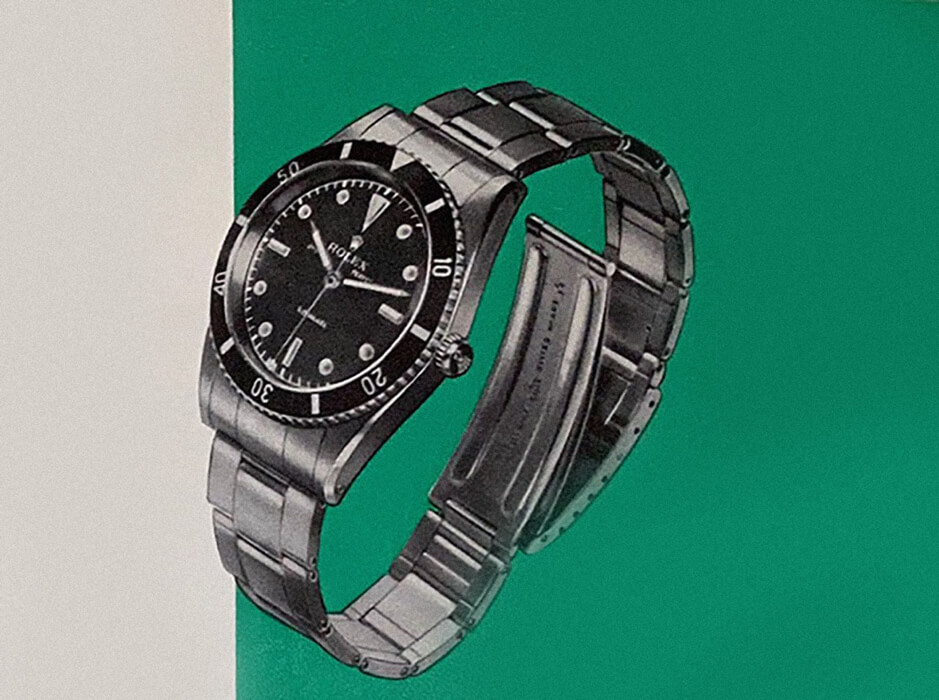
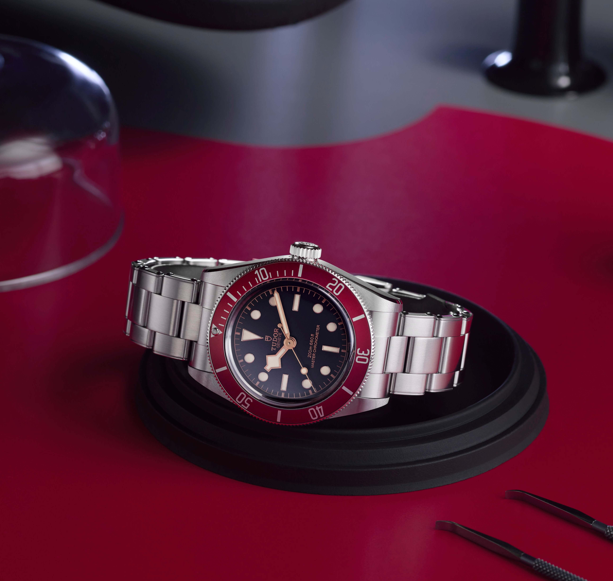

The Faux Rivet Problem
There are not many bracelet details capable of starting a fight. The faux rivet is one of them. Mention the term in any watch forum and in a couple of minutes you will have one camp calling them charming, another calling them dishonest, and a third insisting they don't even notice them on the wrist. For a tiny piece of metal, the faux rivet has done a great job of really exposing us.
 Nenad Pantelic • August 24, 2026
Nenad Pantelic • August 24, 2026

A Brief History
Riveted bracelets are as old as the modern sports watch. The most famous examples were made by Gay Frères, the Geneva bracelet specialist that supplied Rolex, Patek Philippe, Audemars Piguet, and most of the rest of the industry through the twentieth century before Rolex finally acquired them.
Their three-link "Swiss Rivet" bracelets fitted early Submariners, GMT-Masters, Explorers, and Turn-O-Graphs, and the rivets were entirely functional as visible pins on the outside of each link physically held the bracelet together.
By the late 1960s Rolex had moved on to folded links, and eventually to the solid-link bracelets we know today, where rivets had no engineering purpose anymore. They disappeared from new watches for the better part of forty years.
What they left behind was a strong visual association. Rivets meant vintage. Rivets meant the era when sports watches were tools and you could see how they were assembled.

The Return
When Tudor relaunched the Black Bay line in 2012 it leaned hard into mid-century cues. The snowflake hands, the gilt text, rose on the dial, the domed crystal.
The bracelet was designed to complete the picture, and the choice they made was to put rivet-shaped protrusions on the outside of the end links. They were not structural. They were design elements meant to evoke a Gay Frères bracelet from sixty years earlier.
This is the moment the argument starts.

The Case Against
Critics of the faux rivet make a fairly consistent argument, and it usually comes down to one word: pretense. Rivets had a job. Faking that job is, the argument goes, the watch equivalent of a non-functional hood scoop on a sedan, or fake exhaust tips bolted to a rear bumper.
There is also a craftsmanship argument. At the price point of a modern Tudor, call it the upper end of "accessible luxury", buyers expect every detail to be doing something. A decorative rivet pretending to hold links together violates that unwritten agreement. Tudor had borrowed the visual element of the icons without committing to the engineering that made them iconic.
The Case For
Defenders push back on two fronts.
The first is practical. Almost everyone who owns a Black Bay long enough eventually reports that the rivets disappear in daily wear. You don't see them when the watch is on. They sit on the outer edge of the end links, where your wrist hides them. The complaint, this camp argues, is theoretical, sustained mostly by macro photography and forum echo chambers rather than lived experience.
The second is more interesting. Many of the most popular watches feature non-functional details. The Audemars Piguet Royal Oak's iconic bezel screws are not actually screws in the way people imagine. They are decorative slotted heads that are tightened from the back of the case.
If the Royal Oak, for example, gets a pass for that, the argument goes, why not Tudor?
There is also the homage argument. The Black Bay isn't pretending to be a 1958 Submariner. It is only making a visual reference, and the rivets are part of the game. Strip them off, and you get a perfectly fine Oyster-style bracelet, but you lose the line connecting the watch to its predecessors.
A Proxy for Something Bigger
I think that the one interesting angle of this debate is what happened around it. Aftermarket makers like Forstner, Uncle Straps, Strapcode have built businesses partly on the back of Black Bay owners who wanted Oyster-style replacements without the rivet detail.
The fact that this niche exists at all tells you something. Tudor sells enormous numbers of Black Bays, and a big slice of those owners cared enough about the rivets to spend real money on bracelets without them.
Also, as I put in the lead to the article, the faux rivet thing has done a great job of exposing us, the watch nerds. The faux rivet debate showed what we, as enthusiasts, think about how the watch industry should reference its own past in new products.
Pure recreation feels like cosplay. Pure modernity feels like brands forgot where they came from.
In a way, those damn rivets are a proxy for what we actually want from design: high fidelity, function, character, or a mixture of all three. If you wear your Black Bay on a nylon strap, none of this matters. If you don't, then you have already picked a side.